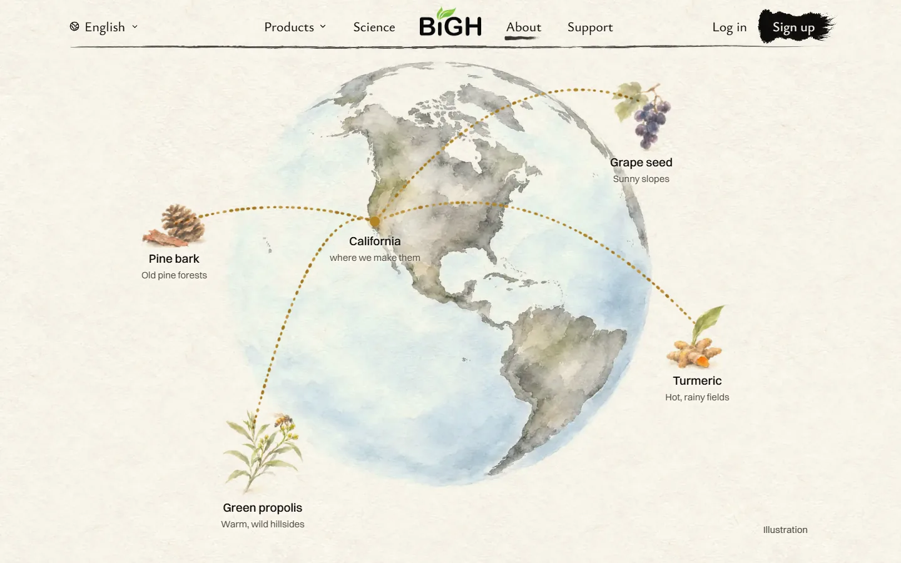
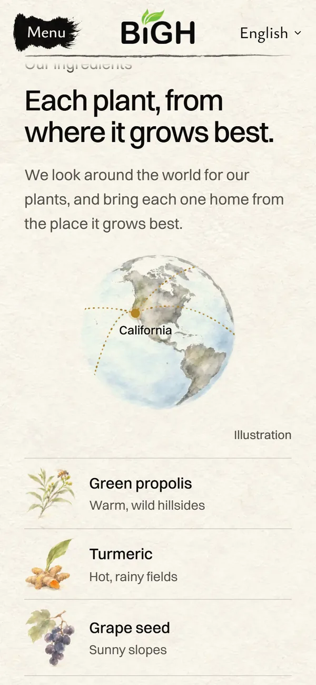
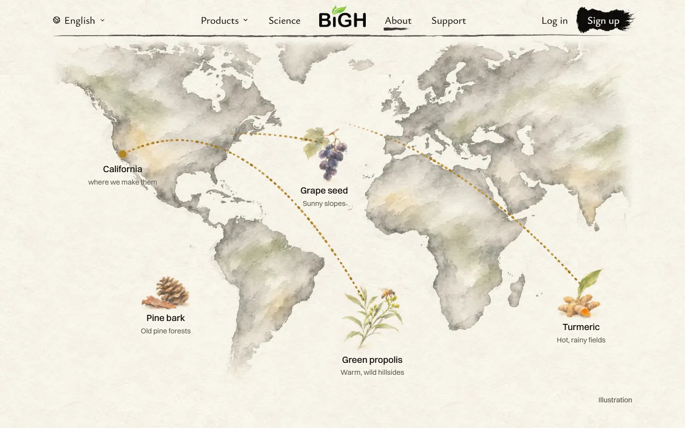
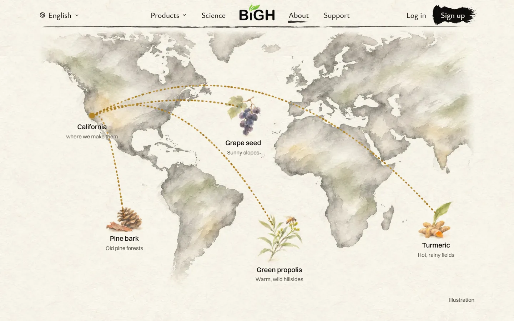
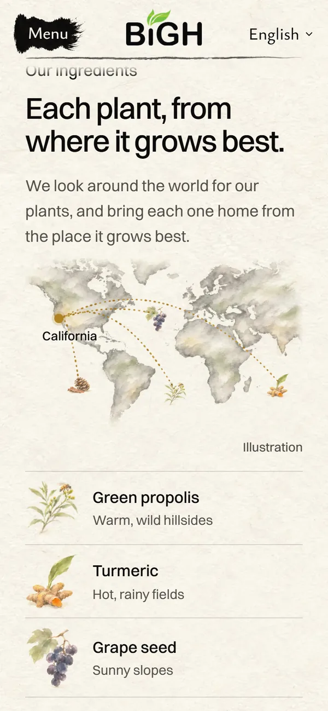

<title>Where Our Plants Grow</title>
<meta name="claude:viewport-fit-sides" content="cover">
<link rel="preconnect" href="https://fonts.googleapis.com">
<link rel="preconnect" href="https://fonts.gstatic.com" crossorigin>
<link rel="stylesheet" href="https://fonts.googleapis.com/css2?family=Ysabeau+Office:wght@400;500;600&display=swap">
<style>
  /* Layout: one column like a scroll. Three ideas for the About page's plants part, each a card
     with the real built page (big screen beside phone), its score and what still holds it back.
     The site's own paper and ink, one gold for the recommendation. */
  :root {
    --paper: #f4f0e6;
    --card: #faf7f0;
    --ink: #171512;
    --ink-soft: #5d574d;
    --rule: #d9d2c1;
    --gold: #7a5a14;
    --gold-bg: #f1e4c4;
    --ask: #1f3d2b;
    --ask-bg: #e3ebdf;
    --title: "Ysabeau Office", "Iowan Old Style", Georgia, serif;
    --body: system-ui, -apple-system, "Segoe UI", Roboto, sans-serif;
  }
  @media (prefers-color-scheme: dark) {
    :root:not([data-theme="light"]) {
      --paper: #1b1915;
      --card: #24211c;
      --ink: #f1ece0;
      --ink-soft: #b6ae9e;
      --rule: #3a362e;
      --gold: #f0d39a;
      --gold-bg: #3d3220;
      --ask: #cfe3c6;
      --ask-bg: #2b3a2c;
      color-scheme: dark;
    }
  }
  :root[data-theme="dark"] {
    --paper: #1b1915;
    --card: #24211c;
    --ink: #f1ece0;
    --ink-soft: #b6ae9e;
    --rule: #3a362e;
    --gold: #f0d39a;
    --gold-bg: #3d3220;
    --ask: #cfe3c6;
    --ask-bg: #2b3a2c;
    color-scheme: dark;
  }
  body {
    background: var(--paper);
    color: var(--ink);
    font: 17px/1.5 var(--body);
  }
  .wrap {
    max-width: 980px;
    margin: 0 auto;
    padding-left: max(16px, env(safe-area-inset-left, 0px));
    padding-right: max(16px, env(safe-area-inset-right, 0px));
    padding-block: 32px 72px;
    display: grid;
    gap: 28px;
  }
  header {
    display: grid;
    gap: 10px;
  }
  h1 {
    font: 600 38px/1.08 var(--title);
    margin: 0;
    text-wrap: balance;
  }
  .lede {
    margin: 0;
    max-width: 38em;
    color: var(--ink-soft);
  }
  .note {
    margin: 0;
    max-width: 40em;
    padding: 12px 14px;
    border-radius: 10px;
    border: 1px dashed var(--rule);
    font-size: 15px;
    color: var(--ink-soft);
  }
  .card {
    background: var(--card);
    border: 1px solid var(--rule);
    border-radius: 14px;
    padding: 18px;
    display: grid;
    gap: 14px;
  }
  .card h2 {
    font: 600 26px/1.2 var(--title);
    margin: 0;
    display: flex;
    flex-wrap: wrap;
    align-items: baseline;
    gap: 6px 12px;
    text-wrap: balance;
  }
  .tag {
    font: 700 22px/1 var(--title);
    color: var(--ink);
  }
  .badge {
    font: 600 13px/1 var(--body);
    color: var(--gold);
    background: var(--gold-bg);
    padding: 5px 9px;
    border-radius: 99px;
  }
  .card ul.notes {
    margin: 0;
    padding-left: 1.2em;
    display: grid;
    gap: 4px;
    max-width: 44em;
  }
  .score {
    margin: 0;
    color: var(--ink-soft);
    font-size: 15px;
    max-width: 44em;
  }
  .score b {
    color: var(--ink);
  }
  .shots {
    display: grid;
    grid-template-columns: 3fr 1fr;
    gap: 12px;
    align-items: start;
  }
  figure {
    margin: 0;
    display: grid;
    gap: 6px;
    min-width: 0;
  }
  figure img {
    display: block;
    width: 100%;
    height: auto;
    max-width: 100%;
    border-radius: 8px;
    border: 1px solid var(--rule);
    background: #f3efe4;
  }
  figcaption {
    font-size: 14px;
    color: var(--ink-soft);
  }
  .stack {
    display: grid;
    gap: 12px;
    min-width: 0;
  }
  .ask {
    background: var(--ask-bg);
    border-radius: 14px;
    padding: 18px;
    display: grid;
    gap: 10px;
  }
  .ask h2 {
    font: 600 24px/1.2 var(--title);
    margin: 0;
    color: var(--ask);
  }
  .ask ol {
    margin: 0;
    padding-left: 1.4em;
    display: grid;
    gap: 8px;
    max-width: 44em;
  }
  footer {
    font-size: 14px;
    color: var(--ink-soft);
    max-width: 44em;
  }
  @media (max-width: 640px) {
    h1 {
      font-size: 32px;
    }
    .shots {
      grid-template-columns: 1fr;
    }
    .shots > figure.phone {
      max-width: 300px;
    }
  }
</style>

<main class="wrap">
  <header>
    <h1>Each plant, from where it grows best</h1>
    <p class="lede">The map again, with no place names, as you asked. It only gives the feeling that each plant comes from the best part of the world for it. Pick one: A or B.</p>
    <p class="note">Each plant now gets the kind of place it loves, in a few words ("Sunny slopes", "Hot, rainy fields"), never a country. These are true of the plant itself, wherever we buy it.</p>
  </header>

  <section class="card" aria-labelledby="b">
    <h2 id="b"><span class="tag">B</span> The globe <span class="badge">My pick</span></h2>
    <ul class="notes">
      <li>A painted globe, California facing you.</li>
      <li>The four plants stand just past its edge, all the way round: "from around the world".</li>
      <li>As you scroll to it, a gold trail runs from each plant over the globe to California, one at a time.</li>
      <li>On a phone: the trails start at the globe's edge, as if from the far side of the world. The plants are listed under it.</li>
    </ul>
    <p class="score"><b>My score: 9/10.</b> The clearest "from all over the world" feeling, and no plant sits on any country. Holding it back: the plants are small next to the globe.</p>
    <div class="shots">
      <div class="stack">
        <figure><figcaption>Laptop, the trails being laid</figcaption></figure>
        <figure><figcaption>Laptop, settled</figcaption></figure>
      </div>
      <figure class="phone"><figcaption>Phone</figcaption></figure>
    </div>
  </section>

  <section class="card" aria-labelledby="a">
    <h2 id="a"><span class="tag">A</span> The map, plants at sea</h2>
    <ul class="notes">
      <li>The same world map as before, with no dots and no place names.</li>
      <li>Each plant floats in a different sea, and a gold trail runs from each to California.</li>
    </ul>
    <p class="score"><b>My score: 8/10.</b> Keeps the map you liked. Holding it back: a plant floating near a coast can still look like it comes from there (the grapes sit off Africa, the propolis off Brazil).</p>
    <div class="shots">
      <div class="stack">
        <figure><figcaption>Laptop, the trails being laid</figcaption></figure>
        <figure><figcaption>Laptop, settled</figcaption></figure>
      </div>
      <figure class="phone"><figcaption>Phone</figcaption></figure>
    </div>
  </section>

  <p class="note">I also tried a third: four small landscapes, one per plant, with one gold road under them to California. It scored only 7.5: its paintings still hint at real countries, and one looks a little Asian. So I left it out.</p>

  <section class="ask" aria-labelledby="ask">
    <h2 id="ask">What I need from you</h2>
    <ol>
      <li>Pick A or B (or tell me something else).</li>
    </ol>
  </section>

  <footer>Your pick for Made in California, F (the valley at dawn), is now the one the draft About page shows. Nothing here is live. Paintings are AI-made and marked "Illustration" on the page.</footer>
</main>
